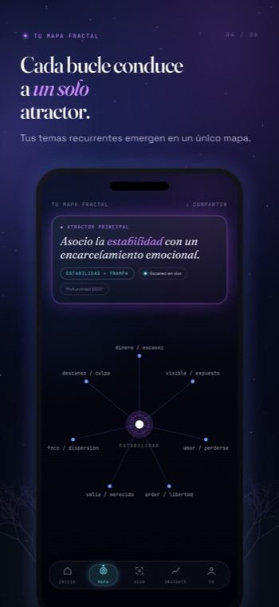
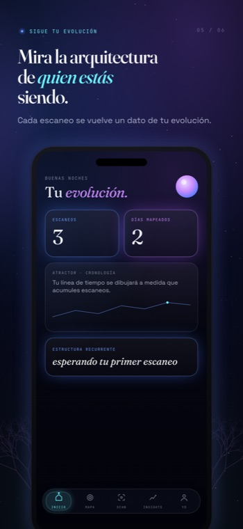
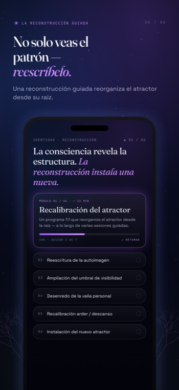

El escaneo guiado
Una conversación serena y en vivo con un espejo que hace una pregunta desestabilizadora cada vez.
Sin aluvión de preguntas. Sin consejos. Sin un cuestionario de veinte campos. Solo un hilo preciso, seguido hasta el fondo — hasta que el detonante, tu reacción, la emoción que protege y el precio que sigues pagando salen a la luz por sí solos.

Una revelación clara
Cada escaneo devuelve una única revelación nítida — no un feed por el que deslizarte.
El Espejo nombra una repetición que aún no habías puesto en palabras. Una sola frase que contiene el bucle: «Cuando ___, yo ___, porque siento ___, y esto lleva a ___.» No te vas con tareas. Te vas viendo algo que ya no puedes dejar de ver.

Tu mapa fractal
Cada bucle que descifras conduce de vuelta a un atractor primario.
Las relaciones, el dinero, el trabajo, el cuerpo — parecen problemas separados, pero el mapa los muestra siguiendo la misma estructura. No son muchos problemas. Uno solo, que se repite, a distintas escalas. Verlos conectar es donde la imagen deja de ser abstracta.

La arquitectura de en quién te estás convirtiendo
Los motivos guardados construyen una imagen viva y cambiante de tu estructura con el tiempo.
Cada revelación que conservas añade una línea al dibujo. Pasados unos meses, no estás mirando notas dispersas — estás mirando la forma de ti mismo, cómo se desplaza, dónde se afloja. La arquitectura no es fija. Está convirtiéndose, y tú puedes observarlo.

Más allá de la app
Cuando ver no basta, una reconstrucción privada 1:1 reorganiza la identidad que genera el bucle.
La app revela la estructura. La reconstrucción es donde se rehace — en la raíz, en una sesión privada con una persona real. Para bucles que se siguen repitiendo incluso después de haberlos nombrado, y estás listo para cambiar la autodefinición que los mantiene en su sitio.